A DSL for model-based realization of
applications in the cloud
Eirik Brandtzæg 2012-6-12
University of Oslo, SINTEF
- Nowadays systems must
- Cost less: Recovery.gov moving to the cloud
- Estimated to save the White House $750,000
- Scale: 25, 088 Tweets Per Second (TPS)
- Cost less: Recovery.gov moving to the cloud
- Cloud is supposed to be the solution...
Context, challenges & requirements
Introducing the Cloud
REMICS
Provisioning resources for a BankManager
The topology to be used differs according to architects' goals
Moving to the cloud
- Cloud provides infrastructure on demand
- Developers built some scripts to move an application to the cloud
INSTANCE1=$(./ec2-api-tools/bin/ec2-run-instances -k dev --region eu-west-1 ami-24506250 | grep INSTANCE | awk '{print $2}')
URL1=$(sh desc.sh $INSTANCE1)
echo "$INSTANCE1 $URL1"
INSTANCE2=$(./ec2-api-tools/bin/ec2-run-instances -k dev --region eu-west-1 ami-24506250 | grep INSTANCE | awk '{print $2}')
URL2=$(sh desc.sh $INSTANCE2)
echo "$INSTANCE2 $URL2"
INSTANCE3=$(./ec2-api-tools/bin/ec2-run-instances -k dev --region eu-west-1 ami-24506250 | grep INSTANCE | awk '{print $2}')
URL3=$(sh desc.sh $INSTANCE3)
echo "$INSTANCE3 $URL3"
ChallengesPublished at [BENEVOL'11]
- Complexity
- Feedback on failure
- Multi-cloud
- Reproducibility
- Shareable
- Robustness
- Metadata dependency
Requirements

Vision & concept
Overview
Big picture

 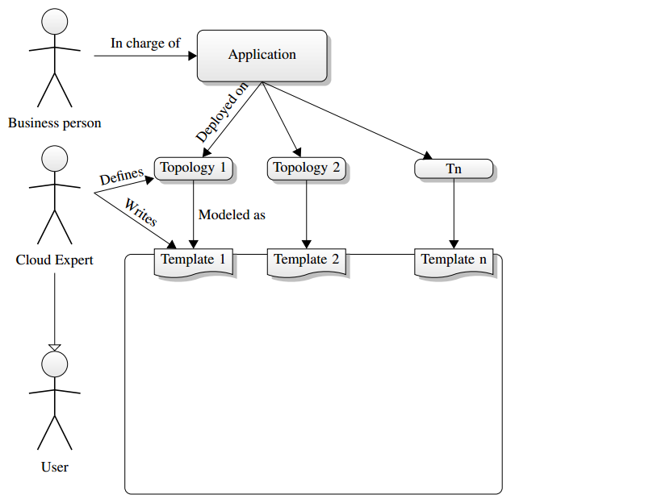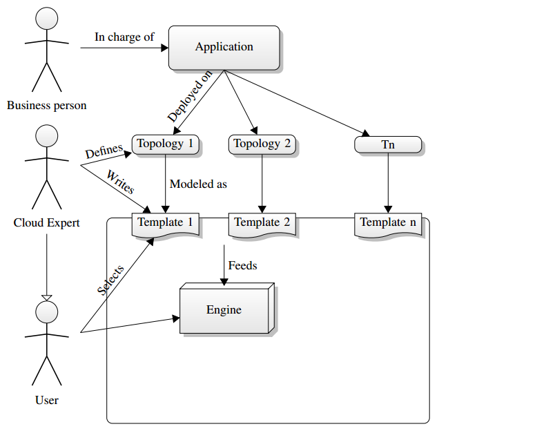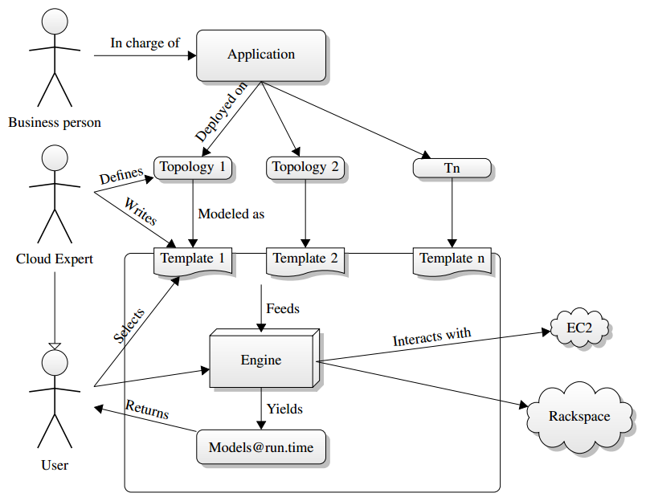
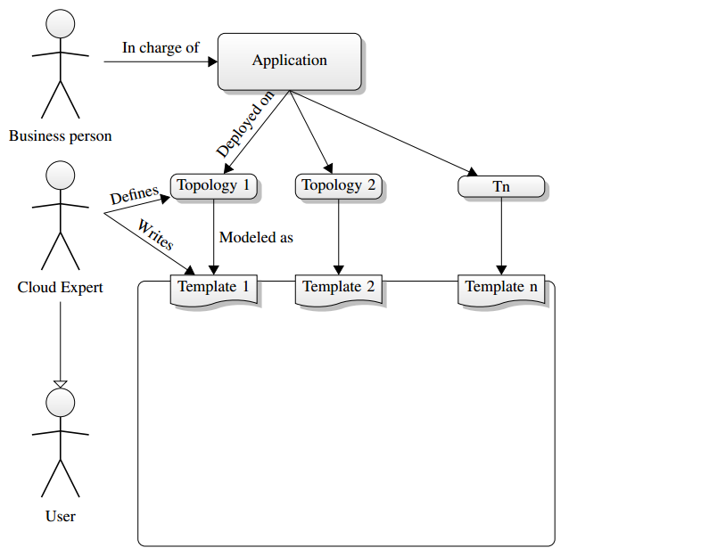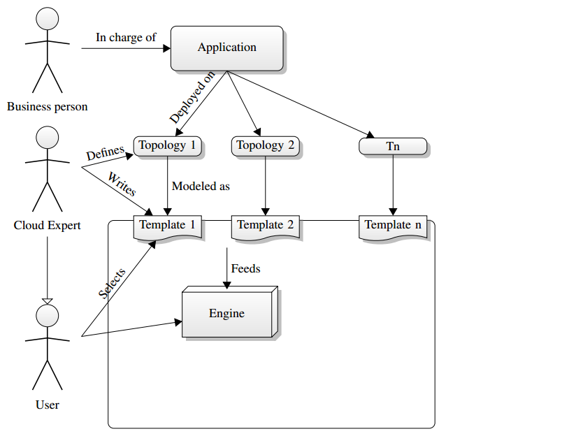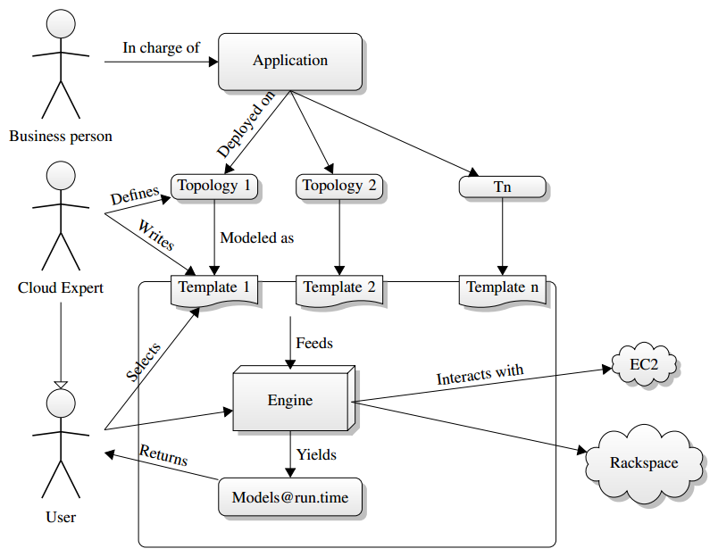Meta-modelPublished at [ECMFA'12 workshop CloudMDE]
 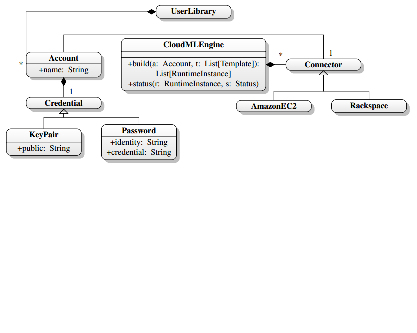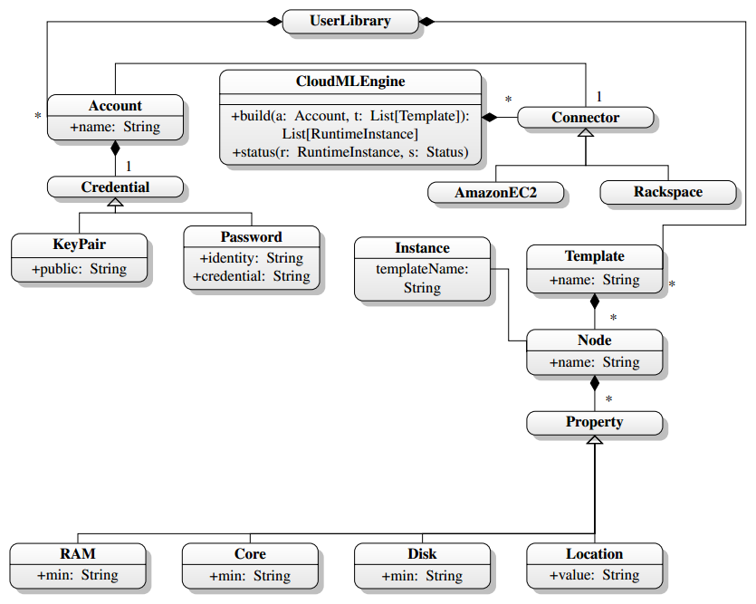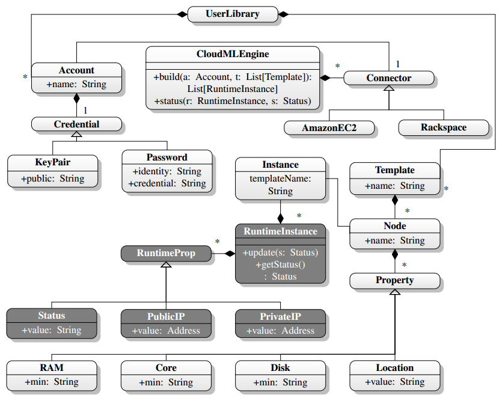
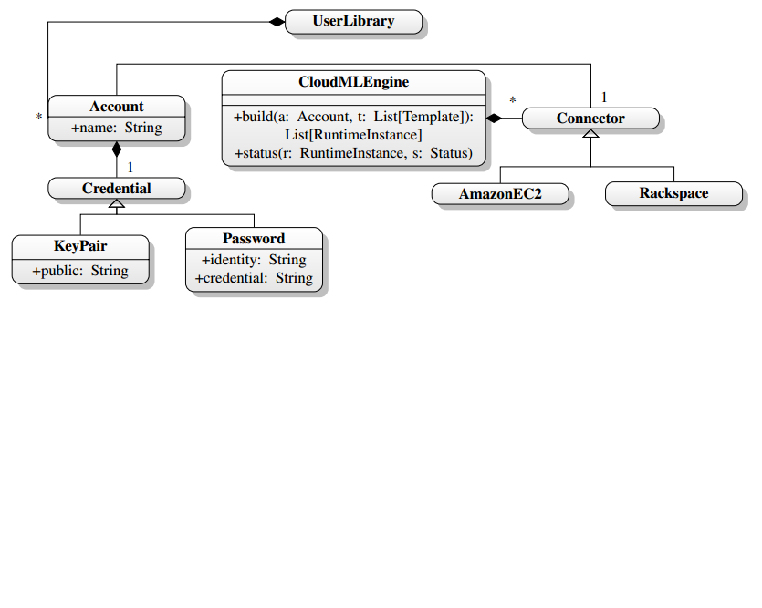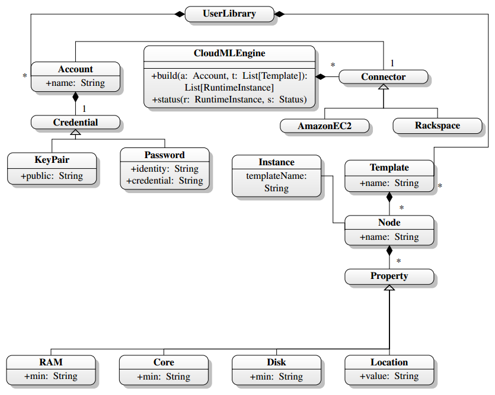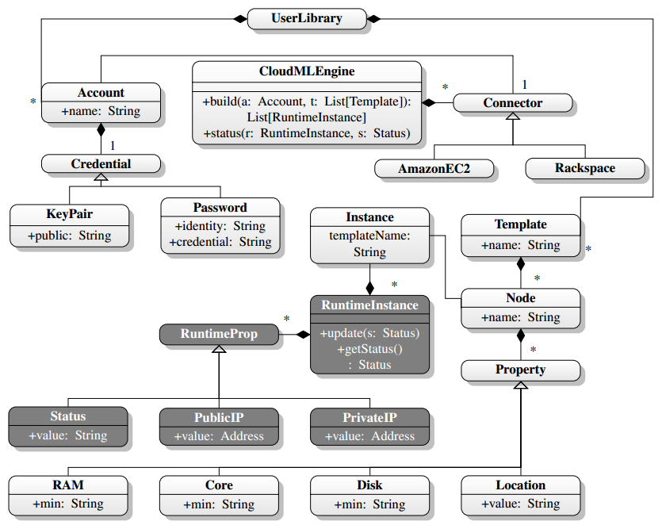Implementation
Technological challenges
- Lexical templateJSON
- Modularity

- Multi-cloud, Software reuse
- Asynchronous, models@run.time

Lexical template
(JSON){
"name": "MyTemplate",
"nodes": [{
"name": "AppNode",
"minCores": 2,
"locationId": "us-east-1a"
}, {
"name": "DatabaseNode",
"minRam": 4000
"locationId": "ap-southeast-1a",
}]
}
Modules
(Multi-cloud
( )Models@run.time
AsynchronousActor model
runtimeInstance ! SetStatus(Status.Building)
def act() {
loop {
receive {
case SetStatus (s) =>
status = s
listeners.foreach(_(Event.Status))
}
}
}
}
runtimeInstance.addListener( (event) =>
event match {
case Event.Status =>
println("Status set to %s".format(runtimeInstance.status))
}
)
Validation & example
Topology

Lexical topology
scp -o UserKnownHostsFile=/dev/null -o StrictHostKeyChecking=no -i pem/dev.pem .
./demoapp/target/bank*.war ec2-user@$1:~/
sh inject.sh remote-deploy.sh $1
URL=$(./ec2-api-tools/bin/ec2-describe-instances --region eu-west-1 $1 | grep IN
STANCE | awk '{print $4'})
echo $URL
scp -o UserKnownHostsFile=/dev/null -o StrictHostKeyChecking=no -i pem/dev.pem $
1 ec2-user@$2:~/
ssh -o UserKnownHostsFile=/dev/null -o StrictHostKeyChecking=no -ti pem/dev.pem
ec2-user@$2 sudo sh $1
sudo /etc/init.d/tomcat6 stop
sudo rm -rf /usr/share/tomcat6/webapps/*
sudo cp /home/ec2-user/bank*.war /usr/share/tomcat6/webapps/ROOT.war
sudo /etc/init.d/tomcat6 start
sudo yum -y update
sudo yum -y install postgresql postgresql-server
sudo /etc/init.d/postgresql initdb
sudo /etc/init.d/postgresql stop
# Note that good old >> did not work here
echo "listen_addresses = '*'" | sudo tee -a /var/lib/pgsql/data/postgresql.conf
echo "host all all 0.0.0.0/0 md5" | sudo tee -a /var/lib/pgsql/data/pg_hba.conf
sudo /etc/init.d/postgresql start
sudo yum -y update
sudo yum -y install tomcat6
sudo mkdir /var/run/tomcat
sudo chown tomcat /var/run/tomcat
INSTANCE1=$(./ec2-api-tools/bin/ec2-run-instances -k dev --region eu-west-1 ami-
24506250 | grep INSTANCE | awk '{print $2}')
URL1=$(sh desc.sh $INSTANCE1)
echo "$INSTANCE1 $URL1"
INSTANCE2=$(./ec2-api-tools/bin/ec2-run-instances -k dev --region eu-west-1 ami-
24506250 | grep INSTANCE | awk '{print $2}')
URL2=$(sh desc.sh $INSTANCE2)
echo "$INSTANCE2 $URL2"
INSTANCE3=$(./ec2-api-tools/bin/ec2-run-instances -k dev --region eu-west-1 ami-
24506250 | grep INSTANCE | awk '{print $2}')
URL3=$(sh desc.sh $INSTANCE3)
echo "$INSTANCE3 $URL3"
wget http://s3.amazonaws.com/ec2-downloads/ec2-api-tools.zip
unzip ec2-api-tools.zip
mv ec2-api-tools-* ec2-api-tools
export EC2_HOME=$PWD/ec2-api-tools
export EC2_PRIVATE_KEY=`ls $PWD/pem/pk*`
export EC2_CERT=`ls $PWD/pem/cert*`
[{
"name": "FrontEnds",
"loadBalancer": {
"name": "Load-Balancer",
"protocol": "http",
"loadBalancerPort": 80,
"instancePort": 80
}, "nodes": [{
"name": "Front-end1",
"minCores": 2
}, {
"name": "Front-end2",
"minCores": 2
}]
}, {
"name": "BackEnd",
"nodes": [{
"name": "Back-end",
"minDisk": 500
}]
}
Client
<repository> <id>cloudml-engine</id> <url>https://repository-eirikb.forge.cloudbees.com/release</url> </repository> </repositories> <dependencies> <dependency> <groupId>no.sintef</groupId> <artifactId>engine</artifactId> <version>0.1</version> </dependency> </dependencies>
import no.sintef.cloudml.engine.Engine
val runtimeInstances = Engine(account, List(template))
Perspectives & conclusions
Conclusions
- Software reuse
- jclouds
- Models@run.time
- Actor model, call-back pattern
- Strong technological foundation
- Scala
- Model-driven approach
- Model-driven templating system. Model-based meta-model
- Lexical template
- JSON-based templates
- Multi-cloud
- jclouds
Requirements in state of the art
| software-reuse | foundation | mda | m@rt | lexical-template | |
|---|---|---|---|---|---|
| Amazon CloudFormation | Yes | No | Yes | ||
| CA Applogic | Yes | No | |||
| jclouds | Yes | Partly | No | No | |
| mOSAIC | Yes | Yes | No | No | No |
| Amazon Beanstalk | Yes | Yes | No | No | No |
| CloudML | Yes | Yes | Yes | Yes | Yes |
Long term
- Full deployment
- Preliminary version accepted at [Cloud'12]
- Cloud management
Thank you for your attention
Publications
BENEVOL’11: Sébastien Mosser, Brandtzæg, Eirik, and Parastoo Mohagheghi. Cloud-Computing: from Revolution to Evolution. In BElgian-NEtherlands software eVOLution seminar, pages 1–2, Brussels, Belgium, December 2011. VUB.
Cloud’12: Eirik Brandtzæg, Parastoo Mohagheghi, and Sébastien Mosser. Towards a Domain-Specific Language to Deploy Applications in the Clouds. In Third International Conference on Cloud Computing, July 2012.
CloudMDE, associated with ECMFA'12: Eirik Brandtzæg, Sébastien Mosser, and Parastoo Mohagheghi. Towards CloudML, a Model-based Approach to Provision Resources in the Clouds. In Workshop on Model-Driven Engineering on and for the Cloud, co-located with the European Conference on Modelling Foundations and Application, Lyngby, Danemark, July 2012. Springer LNCS.
REMICS Deliverable: Gorka Benguria, Andrey Sadovykh, Sébastien Mosser, Antonin Abhervé, and Bradtzæg, Eirik. Platform Independent Model for Cloud (PIM4Cloud). Technical Report D-4.1, EU FP7 REMICS, March 2012.